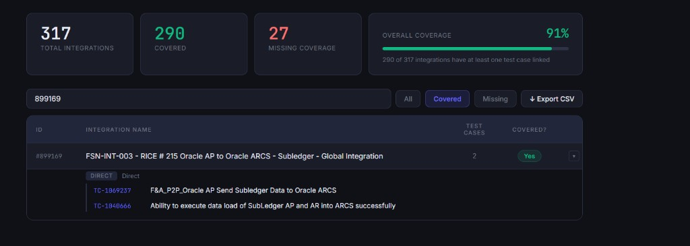

Eligibility: All PwC team members supporting the APS project (US and AC based resources).
Submission deadline: May 29, 2026
Readout: Full team onsite, first week of June 2026 (virtual option available)
Overview
What this hackathon is about
We are running the 2026 Hackathon Competition for everyone on the APS engagement. Teams have until
May 29th to collaborate, innovate, and build a solution that makes day-to-day work better across APS
projects. The goal is to tackle real challenges and put forward ideas that can meaningfully improve how we operate.
During the full team onsite in the first week of June, we will host a Hackathon Readout
Event where teams present their solutions. Teams who cannot attend in person may present virtually.
Submissions are reviewed by a panel of judges, and teams compete for prizes.
Example to aim for: The PwC AI Hub highlights practical builds—for instance, a tool using Claude that
pulls live data from ADO to show integration testing coverage from requirement linkages, with quick visibility into
which integrations have test cases and links straight to those cases in ADO. That kind of practical, high-impact
solution is exactly what this hackathon encourages.
Expectations
The details
Here is what we expect from participating teams.
Team formation
Form teams of up to five members within your workstream.
Work together for the full period through the submission deadline.
Solution focus
Build practical, applicable solutions for your project environment.
Prioritize ideas that improve real workflows—not slides for slides’ sake.
Presentation & judging
Prepare to present at the June readout (in person or virtual).
Submissions are evaluated by a panel of judges; prizes for top teams.
Tools & access
Use the PwC AI Hub to explore PwC-developed AI tools.
For ChatGPT, Claude, or similar: request access via the AI Innovation COE with the correct approval group for your license (e.g. DCM: Advisory – Saurabh Sarbaliya).
Timeline
Key dates & office hours
Kick Off EventFriday, April 17 @ 8:00 AM AZ — open Q&A on the competition
Build periodThrough May 29, 2026
ReadoutFirst week of June 2026 (onsite + virtual presentations)
Questions? Use your usual APS channels or attend the kickoff event!.
Resources
AI tools & firm links
Curated links for the hackathon - Open each in your browser (PwC network).
Real-time answers from Azure DevOps—no spreadsheets, no stale exports. This build shows what happens when you connect
AI to live work-item data: integration test coverage, inferred from requirement linkages, surfaced in one place so
teams can act on gaps immediately.
Live ADO data — Pulls current integrations and relationships directly from Azure DevOps.
Coverage you can trust — See which integrations have linked test cases and how complete the picture is (totals, covered vs. missing, overall %).
One click to the test — Test cases are hyperlinked straight into ADO so reviewers jump from insight to execution in seconds.
Built with Claude by Zack Richter — a concrete example of the kind of practical,
high-impact tooling this hackathon is for.

Integration Testing Coverage — live coverage view with drill-down and ADO test case links.